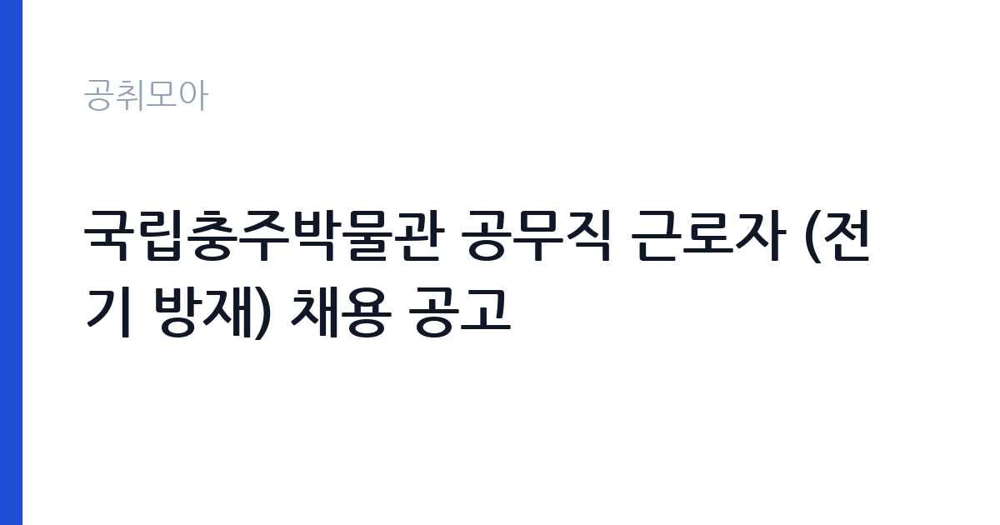

[국가기관] 국립충주박물관 공무직 근로자 (전기 방재) 채용 공고
문화체육관광부 국립중앙박물관 · 충북 · 마감 2026-11-02 (D-7) · 출처 나라일터

한눈에 보는 모집 조건
| 기관 | 문화체육관광부 국립중앙박물관 |
|---|---|
| 공고명 | 국립충주박물관 공무직 근로자 (전기 방재) 채용 공고 |
| 고용형태 | 공무직 |
| 근무지 | 충북 |
| 게시일 | 2026-10-26 |
| 마감일 | 2026-11-02 (D-7) |
지원자격, 이렇게 읽으세요
- 공무직 1명
- 접수 ~2026-11-02 마감
- 세부 조건은 원문 공고문 확인
공무직 근로자는 공무원이 아니라 근로기준법이 적용되는 근로자이지만 기간의 정함이 없는 무기계약으로 채용되는 경우가 많아 정년까지 근무가 가능합니다. 채용은 공무원 시험과 달리 기관의 자체 전형으로 진행되고 인사 규정과 임금표를 적용받습니다. 이번 공고는 문화체육관광부 국립중앙박물관에서 직접 진행하는 자체 전형으로, 응시자격과 제출서류는 공고문에 항목별로 제시됩니다. 전기 직무는 전기기능사 이상의 자격을 요구하는 경우가 대부분입니다. 전기산업기사나 전기기사 자격을 우대하거나 필수로 두는 공고도 있습니다. 실무 경력 요건이 붙는 경우가 많아 경력 증명서와 자격증 사본을 준비해야 합니다. 고전압 설비를 다루는 직무는 안전 교육 이수 여부를 확인합니다. 채용 후에는 신원조회와 건강진단 절차가 이어집니다. 서류는 접수 마감 이후 보완이 되지 않으므로 자격 요건과 증빙 서류를 마감 전에 모두 갖춰야 합니다. 공고문에 명시된 우대 사항은 해당 여부를 확인해 증빙을 첨부해야 가점이 반영됩니다. 학력이나 전공 요건이 없는 공고라도 제출서류 목록은 그대로 적용되므로 서류 준비 부담은 줄지 않습니다. 이 공고 원문에 적힌 응시 조건 문구는 '모집분야 : 전기방재 ○ 선발직급 : 선임 ○ 고용형태 : 공무직 ○ 자격요건 : 자격증, 경력 등 ○ 접수기간 : 2026년10월26일 ~ 2026년11월2일 ○ 응시방법 : 응시원서 작성 후 이메일 또는 우편발송(공고문 참조) ○ 문의처 : 02-2077-9542'입니다. 문구를 그대로 읽고 본인 해당 여부를 하나씩 표시해 두면 서류 단계에서 탈락하는 일을 줄일 수 있습니다.
이 공고의 포인트
이 공고의 첫 번째 포인트는 고용 형태입니다. 무기계약으로 채용되면 정년까지 근무가 가능해 재계약 부담이 없습니다. 반대로 기간제로 채용되는 공고라면 계약 기간을 먼저 확인해야 합니다. 두 번째는 업무 범위가 명확하다는 점입니다. 전기·설비 기술 직무로 채용되므로 배치 이후 담당 업무가 크게 흔들리지 않습니다. 세 번째는 근무지입니다. 충북 지역 근무로 수도권 공고에 비해 지원자 분포가 넓지 않아 상대적으로 경쟁이 분산되는 경우가 있습니다. 접수 기간이 길지 않아 서류 준비와 자격 확인을 동시에 진행해야 합니다. 같은 직무로 함께 올라온 공고 3건 가운데 마감이 중간에 위치하므로 다른 공고와 일정이 겹치는지 확인하십시오. 다만 선발 인원이 1명으로 많지 않아 자격을 갖춘 지원자가 몰리면 경쟁률이 높아질 수 있습니다.
전형은 어떻게 진행되나
서류전형과 면접전형 외에 직무수행능력 평가가 붙는 경우가 있습니다. 평가 방식은 공고문에 구체적으로 적혀 있으므로 어떤 항목에 배점이 높은지 먼저 파악하십시오. 면접에서는 지원 동기보다 실제 업무 경험에 대한 질문이 많고, 답변의 구체성이 평가를 가릅니다. 전형 일정은 서류 마감 이후 빠르게 진행되므로 연락 가능한 번호를 정확히 기재하고 문자와 메일을 수시로 확인해야 합니다. 최종 단계에서는 결격사유 조회와 신체검사가 진행됩니다. 동점자 처리 기준이 공고문에 명시되어 있으니 배점 항목을 미리 확인해 두십시오.
원문에서 확인한 전형 방식
○ 모집분야 : 전기방재 ○ 선발직급 : 선임 ○ 고용형태 : 공무직 ○ 자격요건 : 자격증, 경력 등 ○ 접수기간 : 2026년10월26일 ~ 2026년11월2일 ○ 응시방법 : 응시원서 작성 후 이메일 또는 우편발송(공고문 참조) ○ 문의처 : 02-2077-9542
이런 분께 추천해요
- 전기 관련 자격과 실무 경력을 갖춘 분
- 안전 절차를 엄격히 지키는 분
- 야간·휴일 비상 대응이 가능한 분
지원 전 체크리스트
- 응시자격 요건과 경력 기준을 충족하는가 — 경력은 증명서로 입증해야 합니다
- 무기계약 여부와 정년 기준을 공고문에서 확인했는가
- 제출서류 목록을 모두 준비했는가 — 누락 시 서류 단계에서 탈락합니다
- 접수 마감 2026-11-02 이전에 접수 방식을 확인해 제출했는가
모집 일정과 제출 타이밍
접수 마감은 2026-11-02이고 공고는 2026-10-26에 게시되었습니다. 준비 기간 7일 안에 서류 작성, 증빙 발급, 접수를 모두 마쳐야 하므로 주말을 포함해 일정을 미리 나누는 것이 좋습니다. 특히 경력 기술서나 직무수행계획서를 요구하는 공고는 작성에 시간이 걸리므로 첫날 초안을 잡으십시오. 서류 합격자 발표와 면접 사이 간격이 짧은 경우가 많아 면접 예상 질문은 서류 제출 전에 정리해 두는 편이 유리합니다. 마감 직전에는 접속이 몰리므로 여유를 두고 제출하십시오. 공휴일이 끼어 있으면 증명서 발급이 늦어질 수 있으니 발급 일정을 앞당기십시오. 충북 근무지는 연구기관과 공공시설이 분산되어 있어 근무지 위치를 구체적으로 확인하십시오. 마감까지 일주일 안팎이 남아 서류 준비와 증빙 발급을 병행해야 합니다. 선발 인원이 한두 명 수준이라 지원자 개개인의 서류 완성도가 그대로 평가에 반영됩니다.
직무 이해하기: 국가기관
문화·예술 기관은 전통문화 보존과 예술인 지원, 공연 기획을 담당합니다. 국악원과 문화재 관련 기관은 공연과 전시, 교육 프로그램을 운영하며 시설과 무대 운영 인력을 함께 둡니다. 전기·설비 기술직은 건물과 시설의 전력 설비를 유지하는 일을 합니다. 수변전 설비와 배전반, 조명, 동력 설비를 점검하고 고장 부위를 찾아 수리합니다. 정전이나 누전 같은 사고가 발생하면 원인을 파악하고 복구 조치를 합니다. 안전 규정에 따라 작업 전 정전 확인과 절연 조치를 반드시 거쳐야 하며 작업 내용을 일지에 기록합니다. 야간과 휴일에 비상 연락을 받는 체계가 운영되기도 합니다. 업무는 혼자 처리하기보다 부서 단위로 나눠 진행되므로 담당 구역과 협업 범위를 입사 초에 확인하는 것이 중요합니다. 직무 교육은 입사 후 기관 자체 계획에 따라 진행되므로 사전 경험이 없어도 시작할 수 있습니다.
자기소개서 작성 팁
전기·설비 지원서는 자격과 안전 습관을 함께 보여주는 것이 핵심입니다. 담당했던 설비 규모와 용량, 수행한 점검 주기를 구체적으로 쓰십시오. 사고를 예방한 경험이나 위험 요소를 개선한 사례는 강한 소재입니다. 안전 규정을 지키는 태도를 분명히 밝히고 비상 대응 경험이 있다면 함께 서술하십시오. 문항별 글자 수 제한을 먼저 확인하고, 각 문항의 첫 문장에 결론을 배치하는 방식이 읽기 쉽습니다. 지원 동기는 기관의 어떤 사업에 기여하겠다는 한 문장으로 시작하고, 이어서 본인의 경험을 근거로 붙이십시오. 감점을 피하려면 다른 기관에 보낼 수 있는 범용 문장을 그대로 쓰지 않는 것이 중요합니다. 기관 이름과 사업명이 문장 안에 자연스럽게 들어가야 준비도가 드러납니다.
면접 준비 포인트
면접에서는 안전 절차와 고장 대응 능력을 확인합니다. 정전이 발생했을 때 어떤 순서로 확인하는지, 감전 위험이 있는 작업을 어떻게 진행하는지 묻습니다. 무전압 확인과 잠금 장치 사용을 먼저 언급하십시오. 설비 이력 관리 방식과 야간 대응 가능 여부도 질문 대상입니다. 답변은 상황, 판단, 조치의 순서로 정리하면 전달이 분명해집니다. 모르는 질문에는 모른다고 밝히고 확인 방법을 제시하는 편이 억지 답변보다 낫습니다. 마지막에는 근무 의사와 함께 2026-11-02 이후 일정에 언제든 응할 수 있다는 점을 전달하십시오. 마지막 질문 시간에는 근무 조건에 대한 확인 사항을 한 가지 정도 준비해 가면 성실성이 드러납니다.
급여·근무조건 읽는 법
문화체육관광부 국립중앙박물관의 구체적인 보수 수치는 이 공고 원문의 처우 항목과 보수표에서 확인해야 합니다. 공시 자료로 확인되지 않은 금액은 이 글에서 추정해 제시하지 않습니다. 전기·설비 직무의 보수는 기관 임금표의 기본급에 자격 수당과 위험·특수 근무 수당이 더해지는 구조입니다. 자격 등급과 경력 연수에 따라 호봉이 달라지므로 경력 증빙이 급여 수준을 좌우합니다. 교대 근무가 포함되면 야간·휴일 근무수당이 붙어 실수령액이 기본급보다 높아지는 경우가 많습니다.구체적인 금액은 공고문 처우표에서 확인하십시오. 2026년 적용 최저임금은 시급 10,320원, 월 환산 2,156,880원(주 40시간·209시간 기준)입니다. 고용노동부 고시 제2025-47호로 확정된 금액입니다. 공고문에 금액이 제시되지 않은 항목은 원문 보수표나 처우 설명에서 확인해야 하며 확인되지 않은 수치는 쓰지 않는 것이 원칙입니다. 비교할 때는 월 급여뿐 아니라 상여·명절휴가비·복지포인트·초과근무수당까지 포함한 연간 총액으로 계산하십시오. 기간제라면 계약 기간 동안의 총액을, 무기계약이라면 호봉 상승과 정년까지의 누적 소득을 기준으로 판단하는 편이 정확합니다.
자주 묻는 질문
- 선발 인원은 몇 명인가요?
공고문 기준 1명입니다. 직종별로 인원이 나뉘는 경우가 있으니 모집분야 항목을 함께 확인하십시오. - 근무지는 어디인가요?
충북 지역의 문화체육관광부 국립중앙박물관 소속 근무지입니다. 세부 주소와 출퇴근 조건은 원문 공고문에서 확인할 수 있습니다. - 보수는 얼마인가요?
채용 신분(공무직)과 기관 임금 규정에 따라 정해지며 구체적인 금액은 공고문 처우 항목에 제시됩니다. 금액이 공개되지 않은 경우에는 원문의 보수표를 확인하십시오.
함께 보면 좋은 공고
[국가기관] 제2026-1회 국립한국교통대학교 지역성장 인재양성체계(앵커) 초광역 성장엔진 인재육성사업 전담인력 신규채용 공고 — 마감 2026-11-03[국가기관] 2026년 제8회 서천우체국 기간제 상시계약집배원(농어촌) 채용 계획서 — 마감 2026-11-03[국가기관] 전북대학교 기획처 연구원(기간제 계약직원) 채용 공고 — 마감 2026-11-04출처: 나라일터 공개정보를 바탕으로 공취모아가 정리한 안내글입니다. 모집 조건·일정은 변경될 수 있으니 지원 전 반드시 원문 공고문을 확인하세요. 본 글은 정보 제공용이며 합격을 보장하지 않습니다.